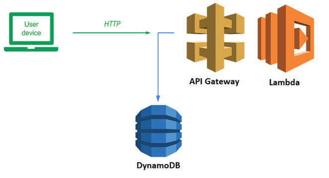
We will now take our guestbook application and break it into a frontend and a backend. Our backend will be a serverless REST API that we will deploy to AWS using API Gateway and Lambda. The frontend will be a simple static webpage that we will host in an S3 bucket. The code will call out to the REST API to POST and GET guestbook entries.
Bring up Cloud Shell. We'll first need to obtain our AWS Account ID for use in identifying resources in the account. Resources are labeled by their Amazon Resource Name (ARN) and within the ARN, is a unique AWS Account ID that binds the resource to your AWS account. We'll use the Security Token Service's get-caller-identity to find the ARN of our own account. Then, we'll invoke the command again to parse out the AWS account using jq and store it in a variable in the shell (aws_account_id) .
aws sts get-caller-identity aws_account_id=$(aws sts get-caller-identity | jq '.Account | tonumber') echo $aws_account_id
Note, this method will not work if your account id has a leading 0. In that case see the alternative method below for assigning your aws_account_id environment variable.
An alternative method to finding your AWS Account ID can be done via the console. Within its UI, click on the account drop-down and view its settings.
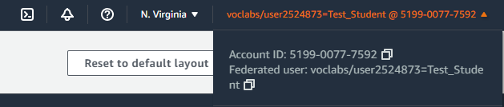
Copy this account number and remove the dashes. In the shell, set the variable in the shell to it:
aws_account_id=<FMI>
We will now examine the code for the REST API. Change into the source directory for the backend
git clone https://github.com/wu4f/cs430-src cd cs430-src/06_aws_restapi_lambda/restapi/lambda
Within sign.py is the sign lambda handler. It uses the boto3 dynamodb resource and an environment variable specifying a TABLE name to initialize itself.
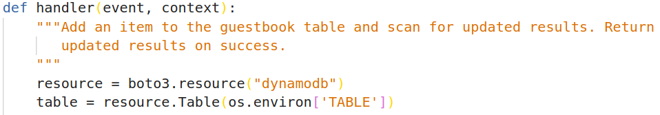
The sign lambda receives the POST data on the event body. We then use put_item to add the entry to the table. Lastly, we scan the table for updated results and return them to the client in the POST response.
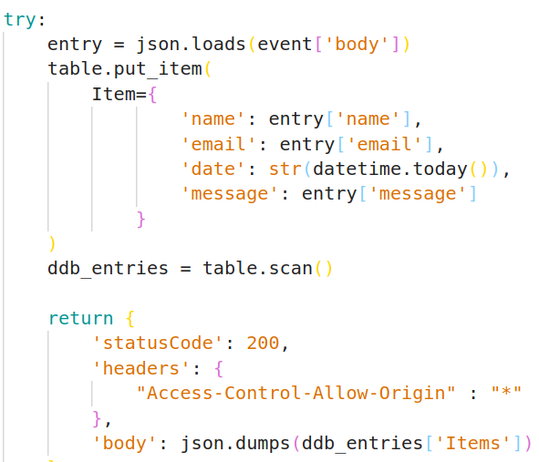
If something fails, we return the client a generic 500 series error.
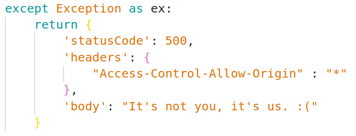
Examine the get_entries lambda function handler which works in a similar way.
We will now deploy the Lambda function that will handle our API requests using the AWS CLI. In Cloud Shell, set a variable in the shell called odin_id to your OdinID (e.g. odin_id=wuchang). Then, create a zip file that includes the code for the Lambda.
odin_id=<FMI> zip function.zip get_entries.py
Construct a command to deploy the lambda. Start by naming it with your OdinID (e.g. wuchang-gb-lambda), specifying the zip file as the source code, specifying the handler function for the lambda to be 'handler' within get_entries.py, specifying a Python environment to execute the function, and specifying that the environment variable 'TABLE' should be set to 'guestbook' in order for the function to read from the prior DynamoDB table. Then, visit IAM in the web console and locate the Roles for the account. Find and copy the Amazon Resource Name (ARN) of the LabRole.
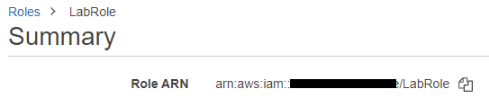
Use it to specify the role that you would like Lambda to assume when executing the function. We use this role since the Lambda function requires access to DynamoDB which is attached to the role.
aws lambda create-function --function-name ${odin_id}-gb-lambda \
--zip-file fileb://./function.zip \
--handler get_entries.handler \
--runtime python3.7 \
--environment Variables={TABLE='guestbook'} \
--role <FMI>
Wait until the function comes up, then test the function by invoking it and sending its output to a file (gb-lambda.out). The invocation should give a 200 status code. View the file to ensure that the entries of your DynamoDB guestbook table appear formatted as JSON.
aws lambda invoke --function-name ${odin_id}-gb-lambda gb-lambda.out
cat gb-lambda.out
We'll now connect up our Lambda function with AWS's API Gateway service. API Gateway provides a range of functionality to application developers building APIs including management of API keys, configuration of per-user usage plans, and additional access control features. In this lab, we will use API Gateway mostly as a proxy passthrough to our Lambda function, but have it handle our Cross-Origin Resource Sharing (CORS) controls. CORS support is required so that the API can control whether or not cross-domain requests are allowed. In our case, since we're implementing a shared, public guestbook application, we only need our CORS configuration to allow everything.
To begin with, create the REST API in API Gateway. We'll use this to implement our two endpoints for the guestbook.
aws apigateway create-rest-api --name ${odin_id}-gb-restapi
View the JSON response and make a note of your REST API's id.
"id": "wba9zta106",
"name" : "...-gb-restapi",Set a variable in the shell to store the value as api_id for subsequent commands.
api_id=<FMI>
We now need to allow our API to call our previously created Lambda function. AWS provides very fine granular access control via its IAM and resource-based policies. While previously, we used an IAM-based role to allow our Lambda to access DynamoDB, for this case, we will demonstrate a resource-based policy.
Specifically, we would like to add a policy on the Lambda function we created to allow any of the API endpoints in our API (e.g. $api_id/*) to invoke it. This is shown below using the ARN of the API.
aws lambda add-permission --function-name ${odin_id}-gb-lambda \
--statement-id apigateway-test-2 \
--action lambda:InvokeFunction \
--principal apigateway.amazonaws.com \
--source-arn "arn:aws:execute-api:us-east-1:${aws_account_id}:$api_id/*"
APIs are organized by a hierarchy of resources with the root resource corresponding to the path '/'. To begin with, retrieve the resource ID of the root resource.
aws apigateway get-resources --rest-api-id $api_id
View the JSON response and make a note of the root resource id.
"id": "7aesjmt5ke",
"path": "/"Set another variable in the shell to store the root_id.
root_id=<FMI>
We will now instantiate our own resource under the root_id for the endpoint that handles viewing entries (/entries).
aws apigateway create-resource --rest-api-id $api_id \ --path-part entries \ --parent-id $root_id
View the JSON response and make a note of its resource id.
"id": "he6ven",
"parentId": "7aesjmt5ke",Set another variable in the shell to store the entries_id.
entries_id=<FMI>
We will now configure a method for the entries resource in API Gateway. Methods and method responses are the front-door to the API and correspond to the HTTP method used to access an endpoint and the format of the subsequent response. In this case, the endpoint will service GET requests to obtain the entries in the guestbook. In addition, our API will be completely open for anyone to use so we specify no authorization or API key is needed as shown below in the method request's put command
aws apigateway put-method --rest-api-id $api_id \ --resource-id $entries_id \ --http-method GET \ --authorization-type NONE \ --no-api-key-required
While method requests and responses handle interactions between the browser and API Gateway, integration requests and responses handle interactions between the API and whatever backend code is used to process requests. In our case, we're asking API Gateway to invoke our Lambda function which will then return the data back in an integration response. We specify this below via the integration request's put command, specifying that we'll be performing a proxy function for the Lambda. Note that communication between API Gateway and the Lambda is typically done via a POST and that we must specify the URI of the Lambda as part of the command.
aws apigateway put-integration --rest-api-id $api_id \
--resource-id $entries_id \
--http-method GET \
--type AWS_PROXY \
--integration-http-method POST \
--uri arn:aws:apigateway:us-east-1:lambda:path/2015-03-31/functions/arn:aws:lambda:us-east-1:$aws_account_id:function:${odin_id}-gb-lambda/invocations
Note that we have not specified a method response or an integration response for this API endpoint. Because our Lambda returns the JSON the client needs directly, we do not need API Gateway to do anything on the response path. To test the API, visit API Gateway and bring up the endpoint.
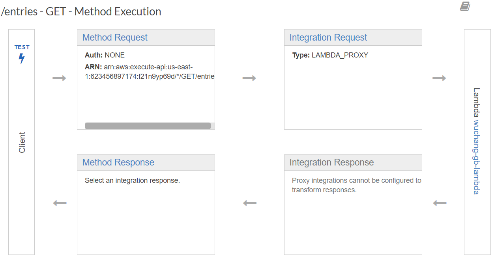
Click on TEST. Scroll to the bottom of the window, and click on TEST again to test the API without any parameters. Ensure you're able to see the guestbook entries being returned as shown below:
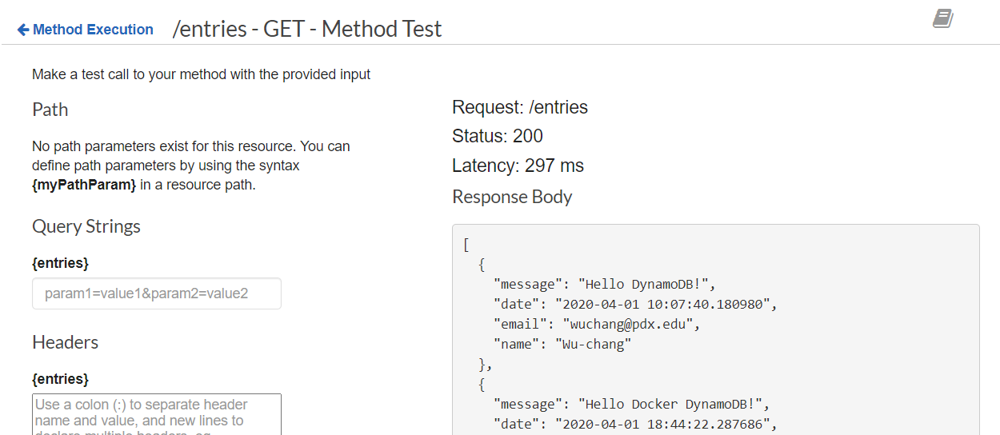
To handle cross-origin requests, a pre-flight request is made by the browser to the target site to see if it will allow the request. This request is done via the HTTP OPTIONS method to the URL of the request. If the API responds with the appropriate CORS header, a status code of 204, and a null payload, then the browser proceeds with the cross-origin request. API Gateway can handle the requests and responses associated with this process. In this case, we add a method request and response and an integration method and response to configure handling of the OPTIONS request.
First, we specify the method request for the OPTIONS request, again with no authorization or API key required.
aws apigateway put-method --rest-api-id $api_id \ --resource-id $entries_id \ --http-method OPTIONS \ --authorization-type NONE \ --no-api-key-required
Then, we specify the method response. In this case we intend to send back the status code of 204 and allow any of the three CORS response headers to be passed back through the API.
aws apigateway put-method-response --rest-api-id $api_id \
--resource-id $entries_id \
--http-method OPTIONS \
--status-code 204 \
--response-parameters '{"method.response.header.Access-Control-Allow-Origin": true, "method.response.header.Access-Control-Allow-Methods": true, "method.response.header.Access-Control-Allow-Headers": true}'
Next, we specify the integration request. In this case, all we need to do is set the HTTP headers and response code so we can simply use API Gateway's "Mock" integration to respond to the OPTIONS request. This can be done via the command below:
aws apigateway put-integration --rest-api-id $api_id \
--resource-id $entries_id \
--type MOCK \
--http-method OPTIONS \
--request-templates '{ "application/json" : "{\"statusCode\": 200}" }'
Finally, the main part of the CORS handling comes in the integration response. For this response, we want to specify a return HTTP status code of 204 and to have all of the CORS headers set to allow cross-domain requests.
aws apigateway put-integration-response --rest-api-id $api_id \
--resource-id $entries_id \
--http-method OPTIONS \
--status-code 204 \
--selection-pattern "-" \
--response-templates "{\"application/json\": \"Empty\"}" \
--response-parameters '{"method.response.header.Access-Control-Allow-Headers" : "'"'"'Content-Type,X-Amz-Date,Authorization,X-Api-Key,X-Amz-Security-Token,X-Amz-User-Agent'"'"'", "method.response.header.Access-Control-Allow-Methods": "'"'"'GET,POST'"'"'", "method.response.header.Access-Control-Allow-Origin": "'"'"'*'"'"'"}'
To test that everything has been setup appropriately, go back to API Gateway and click on the "OPTIONS" method under the /entries endpoint.
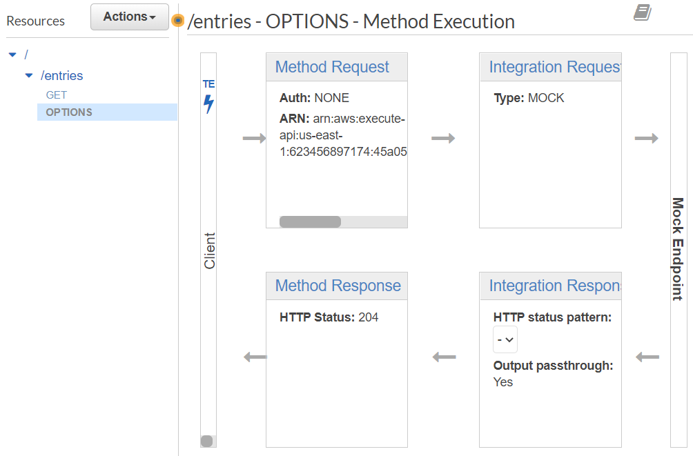
Then, as before, click on TEST and test that the API endpoint works and returns the appropriate CORS response as shown below:
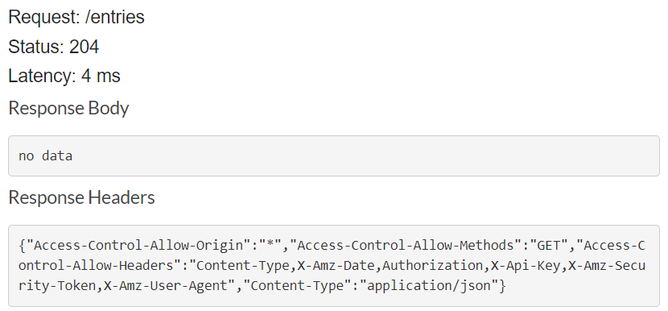
We have only been working with the API within API Gateway. To deploy it we need to create a deployment and specify its "stage". Stages allow one to identify different versions of the API such as "prod" for production and "test" for testing.
aws apigateway create-deployment --rest-api-id $api_id \ --stage-name prod
After deploying the API, go back to the AWS API Gateway web UI and click on "Stages" to find the URL of the deployed API. Copy the URL specified by the "Invoke URL". We will now fill this into our front-end code as its REST API endpoint
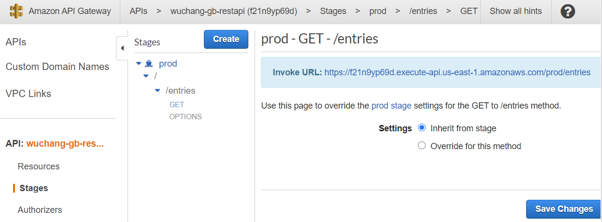
Checkout a copy of the course repository locally and go into the front-end code. We will now connect our static HTML front-end with the API we've just created.
git clone https://github.com/wu4f/cs430-src cd cs430-src/06_aws_restapi_lambda/frontend/src
Edit static/guestbook.js and enter the prefix of the "Invoke URL" as the baseAPIUrl as shown below (with the trailing /)
// fill in your API Gateway endpoint here
const baseApiUrl = "https://f21.....execute-api.us-east-1.amazonaws.com/prod/";Bring up a browser and view the main HTML for the guestbook at 06_aws_restapi_lambda/frontend/src/index.html
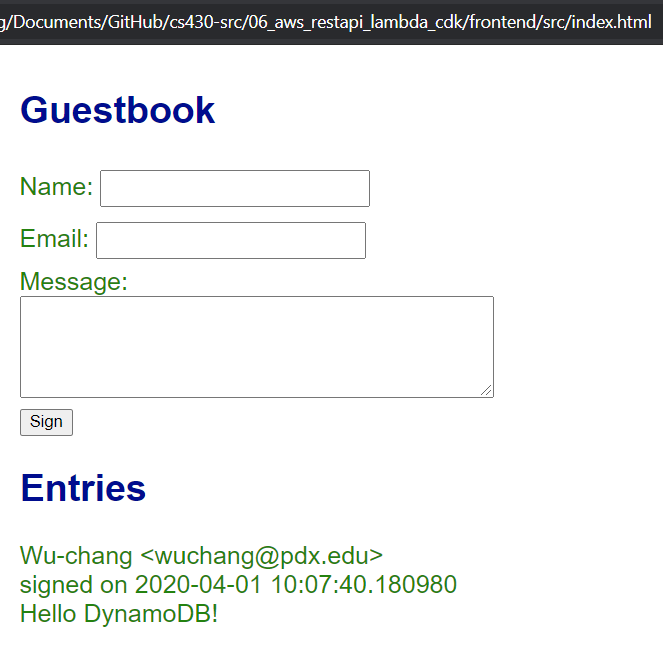
Pause and think about how many steps it took to deploy a single API. Unfortunately, we only deployed half of it. We must repeat the same steps again to enable the Guestbook to be signed. Wouldn't it be nice if we could write a program to do all of this for us? (This will be covered in a later codelab). Repeat the necessary steps to deploy the second API endpoint at /entry to support signing the Guestbook. Note that, we are adding a resource to the REST API we created earlier so we do not need to create a separate REST API.
In Cloud9, back in the source directory lambda, create Zip file with code for signing the Guestbook:
zip function.zip sign.py
Create Lambda for signing:
aws lambda create-function --function-name ${odin_id}-gb-sign-lambda \
--zip-file fileb://./function.zip \
--handler sign.handler \
--runtime python3.7 \
--environment Variables={TABLE='guestbook'} \
--role arn:aws:iam::${aws_account_id}:role/LabRole
Give REST API permission to invoke the signing Lambda:
aws lambda add-permission --function-name ${odin_id}-gb-sign-lambda \
--statement-id apigateway-test-2 \
--action lambda:InvokeFunction \
--principal apigateway.amazonaws.com \
--source-arn "arn:aws:execute-api:us-east-1:${aws_account_id}:$api_id/*"
Create the new endpoint /entry within the REST API and set a variable in the shell based on the id it is given:
aws apigateway create-resource --rest-api-id $api_id \ --path-part entry\ --parent-id $root_id entry_id=<FMI>
Configure the method request for the endpoint to accept POST requests:
aws apigateway put-method --rest-api-id $api_id \ --resource-id $entry_id \ --http-method POST \ --authorization-type NONE \ --no-api-key-required
Configure the integration request to proxy a request to the signing Lambda:
aws apigateway put-integration --rest-api-id $api_id \
--resource-id $entry_id \
--http-method POST \
--type AWS_PROXY \
--integration-http-method POST \
--uri arn:aws:apigateway:us-east-1:lambda:path/2015-03-31/functions/arn:aws:lambda:us-east-1:${aws_account_id}:function:${odin_id}-gb-sign-lambda/invocations
To test the API, visit API Gateway and bring up the endpoint.
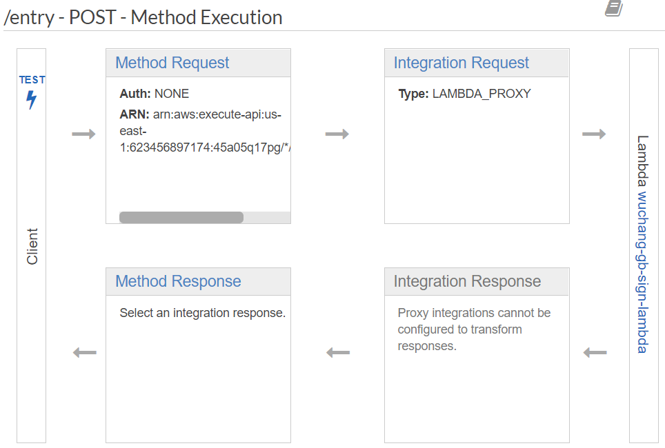
Click on TEST. Scroll to the bottom of the window. To test the API, we'll need to submit a JSON object containing the fields required by the endpoint. Scroll down to "Request Body" and fill in the fields with your names.
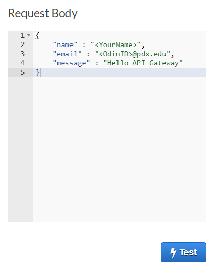
Click on TEST, then view the response. The API returns the entire contents of the guestbook including the entry you have added.
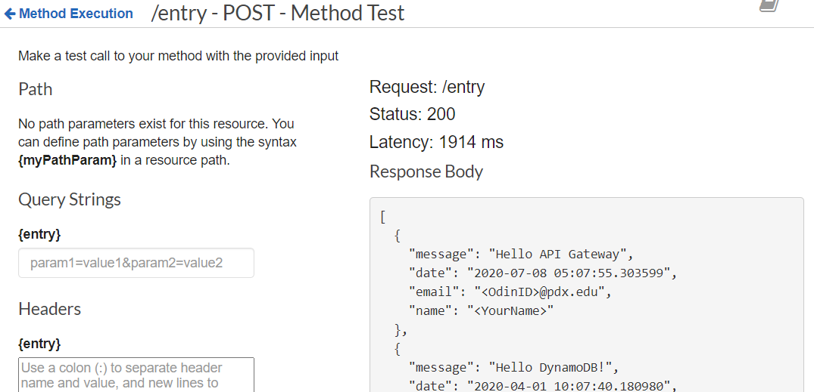
We must now configure CORS for the /entry endpoint. This is in the same manner as before.
aws apigateway put-method --rest-api-id $api_id \
--resource-id $entry_id \
--http-method OPTIONS \
--authorization-type NONE \
--no-api-key-required
aws apigateway put-method-response --rest-api-id $api_id \
--resource-id $entry_id \
--http-method OPTIONS \
--status-code 204 \
--response-parameters '{"method.response.header.Access-Control-Allow-Origin" : true, "method.response.header.Access-Control-Allow-Methods" : true, "method.response.header.Access-Control-Allow-Headers": true}'
aws apigateway put-integration --rest-api-id $api_id \
--resource-id $entry_id \
--type MOCK \
--http-method OPTIONS \
--request-templates '{ "application/json": "{\"statusCode\": 200}" }'
aws apigateway put-integration-response --rest-api-id $api_id \
--resource-id $entry_id \
--http-method OPTIONS \
--status-code 204 \
--selection-pattern "-" \
--response-templates "{\"application/json\": \"Empty\"}" \
--response-parameters '{"method.response.header.Access-Control-Allow-Headers" : "'"'"'Content-Type,X-Amz-Date,Authorization,X-Api-Key,X-Amz-Security-Token,X-Amz-User-Agent'"'"'", "method.response.header.Access-Control-Allow-Methods" : "'"'"'GET,POST'"'"'", "method.response.header.Access-Control-Allow-Origin" : "'"'"'*'"'"'"}'
To test that everything has been setup appropriately, go back to API Gateway and click on the "OPTIONS" method under the /entry endpoint.
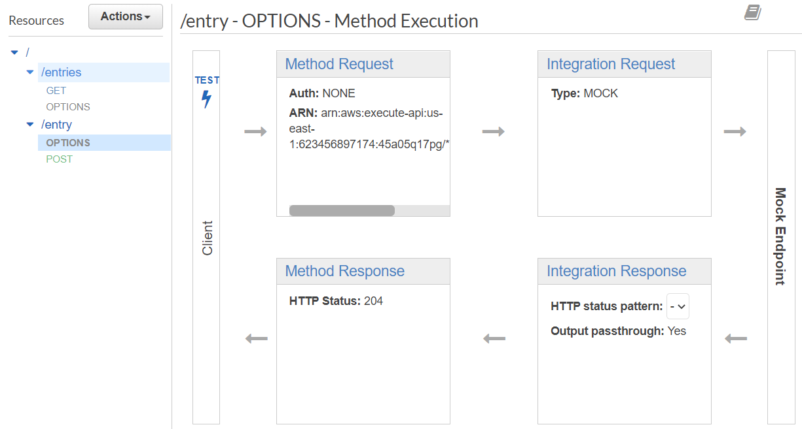
Then, as before, click on TEST, scroll down and click on Test again to see that the OPTIONS API endpoint works and returns the appropriate CORS response as shown below:
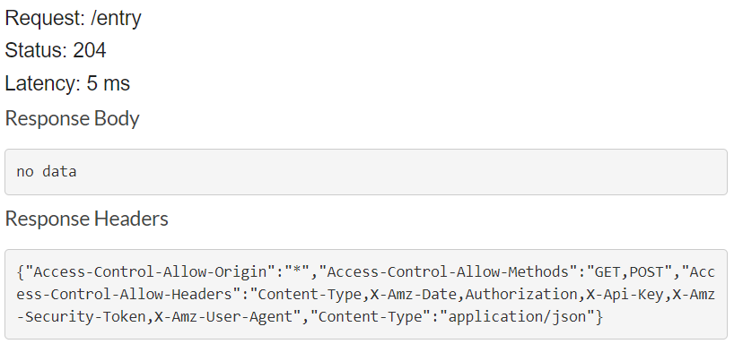
Finally, re-deploy the REST API
aws apigateway create-deployment --rest-api-id $api_id \ --stage-name prod
Back in the course repository you cloned locally, bring up the front-end code again. Use it to enter another entry into the Guestbook and see that it is returned.
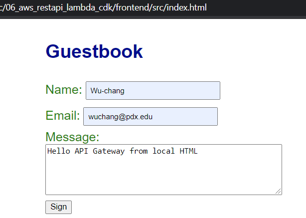
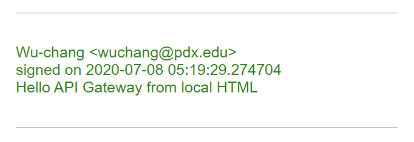
Go back to your Cloud9 environment. We will now examine the code for the frontend app.
cd 06_aws_restapi_lambda/frontend/src
In this version of the guestbook, we do not have Flask available to fill in our guestbook with entries from guests. Instead, we will use JavaScript to dynamically fill our page each time a new entry is added and when a visitor first views the guestbook.
We have an empty div in index.html where we will add entries
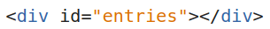
Our JavaScript is in static/guestbook.js. The viewEntries function gets a handle on the entries div, removes any entries that may already be there, and appends a paragraph element with the HTML for each entry in entries. We also add an entry class to the paragraph for styling.
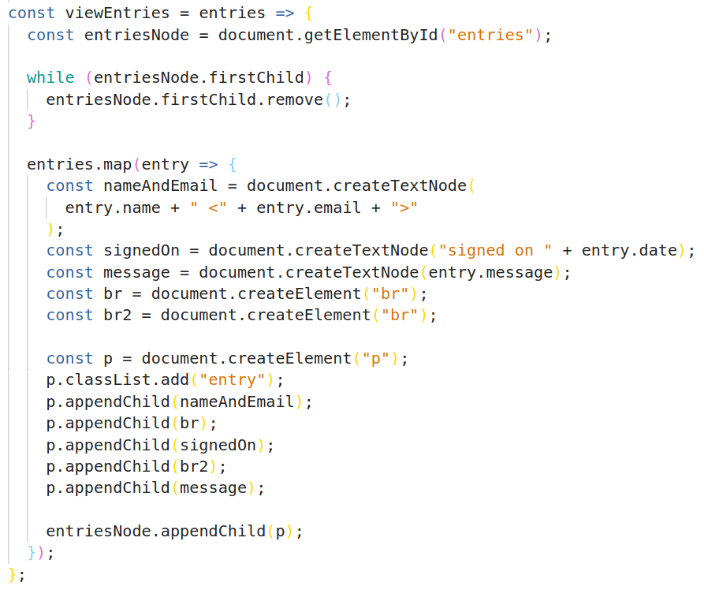
A visitor signs the guestbook by clicking on the Sign button in index.html
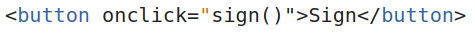
On click, sign in guestbook.js is called. This function pulls the form data from the input fields, posts it to the REST API using the browser's Fetch API, retrieves JSON from the response, and calls viewEntries to update the entries in the guestbook.
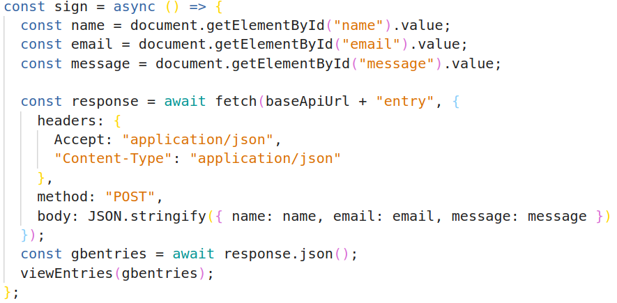
Examine get_entries in static/guestbook.js, which is more or less the same, but uses GET because it does not post a new entry. We call get_entries at the end of guestbook.js when the page is first loaded.
We will now deploy the frontend to an S3 bucket with static website hosting enabled and public access allowed. First, we must modify the frontend code in our Cloud9 copy of the repository to point to our REST API just as we did for our local copy of the repository.
Using the same endpoint as we entered in our local copy of static/guestbook.js, replace
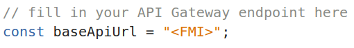
We then create a new S3 bucket to host our site using our OdinID to uniquely identify it. Since our intent is to host a website on the bucket, after we create the bucket, we will then need to change the default bucket policy settings to allow public access. Then, to allow any object in the bucket to be readable by anyone, we attach a policy allowing it.
aws s3api create-bucket --bucket ${odin_id}-frontend
aws s3api put-public-access-block --bucket "${odin_id}-frontend" \
--public-access-block-configuration "BlockPublicPolicy=false"
aws s3api put-bucket-policy --bucket "${odin_id}-frontend" --policy '{
"Version": "2012-10-17",
"Statement": [
{
"Sid": "PublicReadGetObject",
"Effect": "Allow",
"Principal": "*",
"Action": [ "s3:GetObject" ],
"Resource": [ "arn:aws:s3:::'"${odin_id}-frontend"'/*" ]
}
]
}'
With our bucket publicly accessible, we can then bulk copy the assets over to the bucket using aws s3 sync, setting the ACL on the content to be publicly readable. Finally, we configure the bucket's website settings to point the default index file to the standard index.html.
aws s3 sync . s3://${odin_id}-frontend/
aws s3 website s3://${odin_id}-frontend/ --index-document index.html
Visit: http://${odin_id}-frontend.s3-website-us-east-1.amazonaws.com/
Copy the URL and open the website in Chrome. Add an entry with the message "Hello S3, API Gateway and Lambda!".
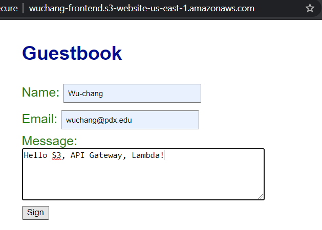
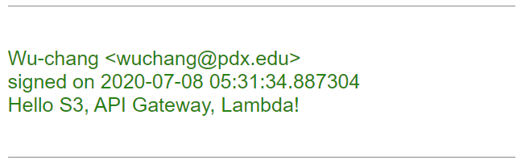
Remove the Lambda functions, the API and the bucket used for the lab.
aws lambda delete-function --function-name ${odin_id}-gb-lambda
aws lambda delete-function --function-name ${odin_id}-gb-sign-lambda
aws apigateway delete-rest-api --rest-api-id $api_id
aws s3 rm --recursive s3://${odin_id}-frontend/
aws s3 rb s3://${odin_id}-frontend
Keep your Cloud9 environment.